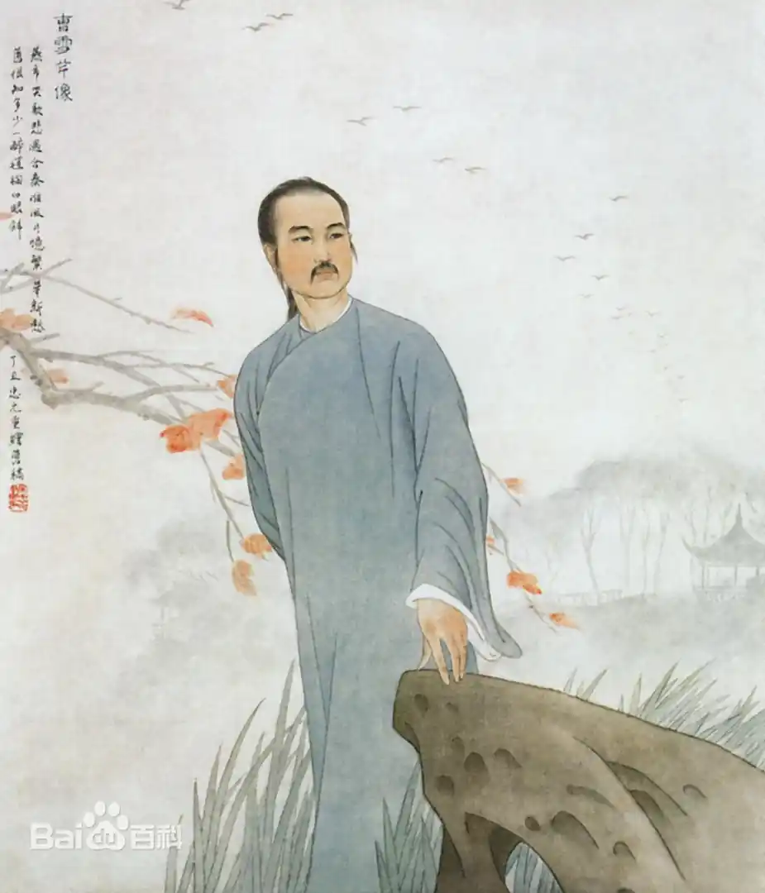
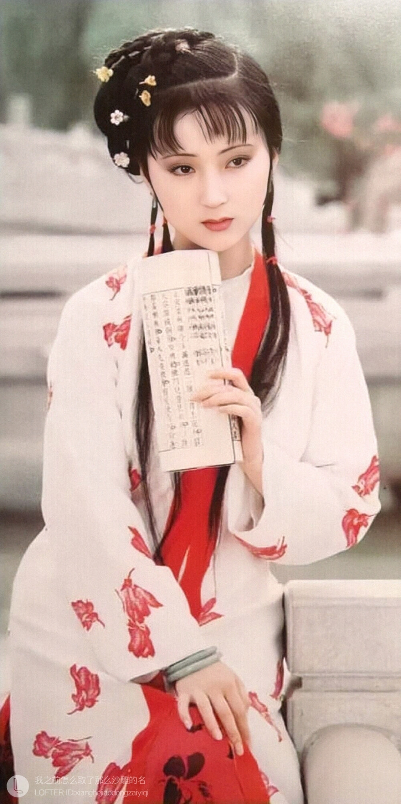
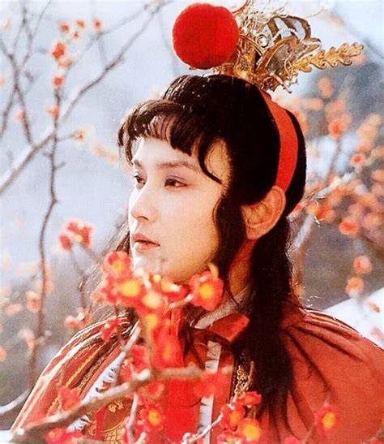
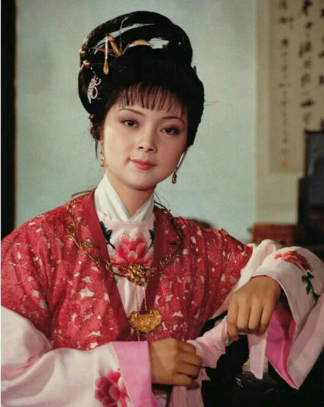
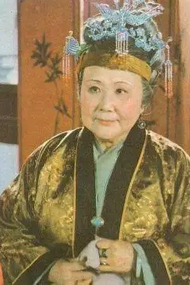

作者介绍

作者介绍
曹雪芹（1715年—1763年）（一说1715年—1764年 [62]），名霑，字梦阮，号雪芹，又号芹圃、芹溪。祖籍辽阳。清朝小说家、诗人、画家。曹寅之孙。 [57-58]潜心10年，增删5次，创作出具有深刻思想内涵和丰富故事情节的名著《红楼梦》（又名《石头记》），此书在中国文学发展史上占有重要的地位。
曹雪芹少年时家居南京，后随家迁移北京。少年时代经历一段极为富贵豪华的生活。1727年，其父曹頫因事株连，以亏空款项等罪被革职、抄家，家族遂败落，随家移居北京。晚年住在北京西郊，举家食粥，更为艰难。为生活所迫，妻死子亡，穷困潦倒而死，年不及五十岁。
故事背景
《红楼梦》以错综复杂的清代上层贵族社会为背景，以贾宝玉和林黛玉的爱情悲剧为主线，通过对贾、史、王、薛四大家族荣衰的描写，展示了18世纪上半叶中国封建社会末期的方方面面，囊括了多姿多彩的世俗人情，可谓一部百科全书式的长篇小说。鲁迅先生在《中国小说史略》中评《红楼梦》：“全书所写，虽不外悲喜之情，聚散之迹，而人物事故，则摆脱旧套，与在先之人情小说甚不同……盖叙述皆存本真，闻见悉所亲历，正因写实，转成新鲜……单是命意，就因读者的眼光而有种种：经学家看见《易》，道学家看见淫，才子看见缠绵，革命家看见排满，流言家看见宫闱秘事……”
剧情简介
《红楼梦》书叙西方灵河岸上三生石畔的绛珠仙子，为了酬报神瑛侍者的灌溉之恩，要将毕生的泪水偿还，就随其下凡历劫。宝玉为神瑛侍者转世，林黛玉为绛珠仙子转世，这段姻缘称为“木石前盟”。远古女娲炼石补天遗下的顽石，通灵性，为贾宝玉出世时所衔的“通灵宝玉”，“通灵宝玉”历尽世间辛酸悲欢的故事，就是《石头记》，亦即《红楼梦》。
林黛玉

林黛玉是中国古典名著《红楼梦》的女主角，金陵十二钗之首，贾母的外孙女，贾宝玉的姑表妹、恋人，贾府通称林姑娘。容貌清秀，自幼体弱多病，父母双亡，被贾府收养。林黛玉从小寄人篱下，造就了乖僻敏感的性格，生性聪慧，极工诗词，有才女之称。
贾宝玉
贾宝玉自幼深受贾母疼爱，游于温柔富贵乡，专爱作养脂粉，亲近家里姐妹和丫鬟；他重情不重礼,喜欢诗词曲赋之类性情文学，厌恶四书和八股文，批判程朱理学，把那些追逐科举考试、仕途经济的封建文人叫做“禄蠹”。可是到头来“瞬息间则又乐极悲生，人非物换”。
薛宝钗
薛宝钗，古典名著《红楼梦》中的女主角之一，金陵十二钗之一，男主角贾宝玉的姨表姐、妻子。她容貌丰美，举止娴雅，恪守妇德，是代表封建女性典范的“冷美人”。父亲早亡，有一兄薛蟠。宝钗进京主要是为了备选“才人、赞善”之职，但由于各种原因后文再未提及。进京后与母亲薛姨妈、哥哥薛蟠寄住于贾府。她挂有一把錾有“不离不弃，芳龄永继”的金锁，寓意金玉良缘。
王熙凤
王熙凤，又称凤辣子,凤姐、琏二奶奶、凤姑娘、凤哥,凤丫头,王熙凤早年嫁于荣国府贾赦长子贾琏。婚后不久，她便凭借才干逐渐掌管荣国府家务。王熙凤为人狠辣且贪恋权财，犯下诸多恶行贾府被抄家时，王熙凤往年放贷重利的借票被搜出，盘剥敛财之事败露。本就疾病缠身的她经此打击，身心俱损。此后虽仍料理家务，却已力不从心且渐失人心。病榻之上，她将独女贾巧姐托付给曾受恩惠的刘姥姥,最终重病不治，凄凉离世。
贾母

贾母，又称史太君，出身金陵史侯家族（四大家族之一），为贾代善之妻、贾宝玉祖母及林黛玉外祖母，育有贾赦、贾政、贾敏等子女，其内侄孙女为史湘云。作为贾府最高统治者，其治家风格大礼严谨、小节灵活，通过纵容孙辈维系家族平衡，尤其溺爱贾宝玉并默许其与林黛玉的青梅竹马关系其性格通权达变，既庇护年轻一代的成长空间，又默认家族内部奢靡风气，被评价为“古今中外一祖母”式的封建贵族代表人物典型